大家好呀
这篇 Markdown 旨在与大家分享如何使用 Git 这一个版本控制工具
虽然比较长，但是不要害怕哦~
Written by ZAMBAR
最后更新：2023/12/23 - 22:30
推荐阅读
由 Asta 倾情推荐
OhShitGit Git避坑指南
GitCheatSheet Github官方CheatSheet
Intro
什么是 Git ？我为什么需要它？
假设你（Alice）和你同学（Bob、John）在一起做SI100B的Project
你可能遇到以下情况
sequenceDiagram
participant Alice
participant Bob
participant John
opt Debug中
John->>John: 正在解决Bug<br>看起来他需要很久<br>让我们暂时忽略这个可怜人
end
opt 重构了2个文件
Bob->>Bob: 嗯，我来重构吧
end
opt 开发新的功能
Alice->>Alice: 努力添加Feature
end
Alice->>Bob: 嗨！我刚刚做出了<br>一个新的功能!!!
Bob->>Alice: 太好了，我们把它<br>加到代码里去吧
Note over Alice,Bob: 两人用【U盘】<br/>友好地（真的友好）<br/>交换了文件
Note over Bob: 坏了，刚刚<br>误删了一个文件
Note over Alice: 我代码<br>怎么运行不起来了！
Bob->>Alice: 组长！我重构完了！<br>【递出U盘】
John->>Alice: 嗨！我的bug修好了！【递出U盘】
Note over Alice,John: 三人面对着三个U盘里各不相同的代码沉默良久所以你会发现，有的时候增、删、改代码都需要一次及时并且简单的同步，那么没关系，Git就会帮你解决这个问题
它能够（在绝大多数情况下）智能地识别你对代码的修改，基本上只要不是不同人进行了同一处地方的操作，基本都不会有问题的啦！
以上的问题，放在Git的工作流中，就会变得非常简单了！
你的工作流可能就变成了这样：
sequenceDiagram
participant Alice
participant Bob
participant John
participant Git-Repo
Alice->>Git-Repo: add+commit+push
Git-Repo-->>John: pull+merge
Git-Repo-->>Bob: pull+merge
Bob->>Git-Repo: add+commit+push
Git-Repo-->>John: pull+merge
Git-Repo-->>Alice: pull+merge
John->>Git-Repo: add+commit+push当然，Git 还有强大的分支管理功能，我们可以拉取出一个分支用来专注地进行一个特性的开发，一次紧急的 bug 修复等等，这样就避免了我们因无关的事情而进行非必要的拉取与合并。
如果你学会了分支，复杂的工作流就可以更进一步简化：
gitGraph
commit id:"这是之前版本的代码"
branch hotfix/bug1
branch dev
checkout dev
commit id:"立项并开发各种功能"
branch dev/feat1
branch dev/rebuild
checkout dev/feat1
commit id:"添加了一点feature"
checkout hotfix/bug1
commit id:"紧急修复了bug1"
checkout main
merge hotfix/bug1 id:"bug1修复完成，允许合并"
checkout dev/rebuild
commit id:"重构了代码"
checkout dev/feat1
commit id:"继续添加了一点feature"
checkout dev
merge dev/feat1 id:"新feature合并到代码中"
checkout main
merge dev id:"测试无误，添加新feature"
checkout hotfix/bug1
commit id:"紧急修复了bug2"
checkout dev
merge dev/rebuild id:"重构测试无误，合并"
checkout main
merge dev id:"测试无误，允许合并"
merge hotfix/bug1 id:"bug修复通过，允许合并"吐槽：这个 Mermaid 渲染 Git Graph 居然不能自适应大小？？？还是附一个图吧

这一个像地铁线路一样的图，就是我们树枝状工作流的时间线啦！
当然，你会说，我误删了一个代码！ 或者 老板说用第一版！
没关系，Git 是一个基于修改进行记录的工具，也就是说，你的每一次修改，都可以无缝回滚！对于改着改着代码就跑不起来了的程序员来说，简直就是福音！就让他来代替你的 Ctrl+Z 吧！
即便是大公司的日常的开发，也大多就是下图这样了！
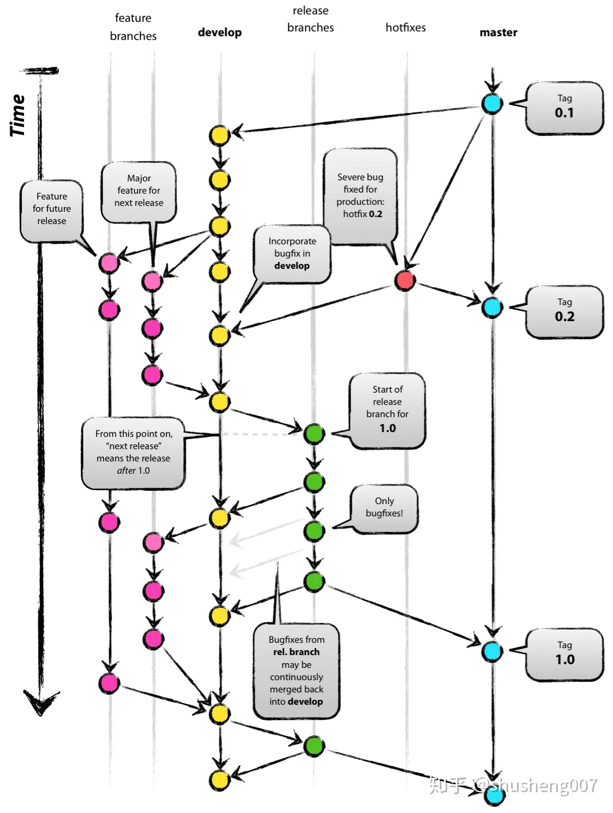
所有我们需要的，只是安安心心建一个远程的代码仓库，然后一顿add + commit + push 组合拳，就好了！
Git 是如何工作的？
Git 就像你的秘书，因为它是一种类似增量备份的一种模式，会记录下每一次你的增、改、删，而不是单纯的记录文件。这也是为什么它叫做版本控制工具，有了 Git，你就可以轻松地在不同的代码版本中切换、更新和回滚。
一般的 Git 的结构如下
graph TB
subgraph 远程の各种托管平台 - 比如 Github
repo[远程仓库<br>repo]
end
subgraph 本地 - 通常是你的电脑
local[本地仓库<br><small>通常是你的文件夹</small>]
stage[暂存区/索引<br>stage/index<br><small>在一个神秘且一般<br>隐藏的文件夹<code>.git</code></small>]
work([<b>工作区</b><br><small>就是文件夹里你能看到<br>的目录文件等<small/>])
end
repo -- 拉取 pull --> work
repo <-- 推送 push --> local
repo -- 抓取信息 fetch<br>克隆 clone --> local
stage -- commit -->local
work -- add --> stage更具体的请参见
这个页面
另：fork 和 use template
-
use template：对远程仓库发动“拿来把你”，~~对方由于开源精神不得不把代码连同之前的所有commit都给你（bushi~~
当然没有开源精神也不肯能会设置成模板的（ -
fork：对远程仓库发动“借我使使”，对方的仓库仍然与你有关联，也就是对方未来的代码修改和commit你仍然可以直接合并到你 fork 的仓库。
由于一般我们没有办法直接对对方的仓库进行直接的修改，所以往往会 fork 一份到本地，本地进行修改之后，如果觉得有必要可以向对方请求合并，也就是 pull request 到对方仓库（即：给你康康，你要不要嘛），对方可以考虑是否合并你的修改。
基本命令操作
在开始菜单中搜索 git bash 可以打开命令行窗口

你也可以选择在终端直接调用 git 命令使用 Git
Git 的 bash 和 Windows 的终端/命令行 有什么区别？请自行查阅~
git init
在当前文件夹下初始化一个本地仓库，本质上就是新建了那个神秘的 .git 文件夹
git clone [url]
克隆一个远程仓库/下载一个项目到当前文件夹（通常也会帮你建立好本地的仓库）
git status
显示当前的状态，包括：
- 当前分支的名称。
- 当前分支与远程分支的关系（例如，是否是最新的，领先/落后了几个 commit）。
- 未暂存的修改：显示已修改但尚未使用
git add添加到暂存区的文件列表。 - 未跟踪的文件：显示尚未纳入版本控制的新文件列表。
git status -s
输出当前状态的更简短的结果，格式如下：
其中，每个文件的开头会有两位的字母来代表当前文件的状态，请参考：
第一位X 第二位Y Meaning
-------------------------------------------------
[AMD] not updated
M [空MTD] updated in index
T [空MTD] type changed in index
A [空MTD] added to index
D deleted from index
R [空MTD] renamed in index
C [空MTD] copied in index
[MTARC] index and work tree matches
[空MTARC] M work tree changed since index
[空MTARC] T type changed in work tree since index
[空MTARC] D deleted in work tree
R renamed in work tree
C copied in work tree
-------------------------------------------------
D D unmerged, both deleted
A U unmerged, added by us
U D unmerged, deleted by them
U A unmerged, added by them
D U unmerged, deleted by us
A A unmerged, both added
U U unmerged, both modified
-------------------------------------------------
? ? untracked
! ! ignored
-------------------------------------------------
这个格式的含义与 VSCode 中显示工作区文件变化的方式一样（也就是你的文件名为什么会是绿的多了个U，红的多了个M等等）
git add .
让 Git 将当前目录下的所有文件目前看起来的样子记录下来，并丢到暂存区
git commit -m [MESSAGE]
来自作者的一句劝：好好写 commit message，特别是你的代码还能跑起来的时候
将暂存区内容添加到本地仓库中，并这一些更改附上 [MESSAGE] 的说明
你可能还想知道： - 完蛋，我刚提交 commit 就发现还有一个小改动需要添加！ - 我草，我要修改我刚刚 commit 提交的信息！
git push
将本地仓库推送到远程仓库
git pull
将远程仓库拉取到本地仓库
Git 时光机
参阅：哎呦我去，我刚才好像犯了个大错，能不能给我台时光机啊!?!
准备工作
安装 Git
On Windows
如果你是使用 Windows 的用户，请
-
右键你的开始菜单，选择
终端（管理员）或者Windows PowerShell（管理员）打开命令行/终端， 如果提示出需要管理员权限（UAC窗口），点是即可 -
输入

-
接下来也可能会弹出需要管理员权限的窗口，同样点
是即可 -
接下来就会出现Git的安装页面啦！别着急，安装完后就会自动关闭的

-
安装完成
此时，关闭并重新打开终端，在终端里输入
就会显示Git的版本了On Mac OS / Linux
请查找对应系统 / 发行版的安装方式
配置身份信息 —— Tell Git who you are
如果你使用了 Github Desktop，请参阅配置 Github Desktop
在终端运行
填写你的邮箱和名字
这样，在每次进行提交代码的时候，Git就可以追踪来源，也就是知道你的身份了！这样在 Code Review 的时候就可以知道是谁贡献的这个代(shi)码(shan)。
这样做可以用来区分代码贡献者，相当于一个没有密码的账号或者名片。
尝试图形化的交互—— Github Desktop
下载 Github Desktop
配置 Github Desktop
- 选择
Sign in to github.com
- 在浏览器里面点
Authorize desktop授权
- 非常重要！ 这一步是配置Git的用户信息！也就是课上出现的
Please tell me who you are的时候的配置 - 此处输入你的邮箱和名称即可
- 如果进行了这一步，上文配置Git中的配置用户身份信息的步骤就可以跳过了

开始克隆一个仓库
相当于
git clone
- 打开主界面

- 点击
Clone a repository from the Internet...
此时可以选择
Local Path来确定你的本地仓库的存放位置 - 此时就可以使用图形化的操作界面啦！
从远程仓库拉取
相当于
git pull

点击Pull origin
做一些更改，并提交到远程仓库
相当于
add+commit+push
add
在 Github Desktop ，文件默认是帮你全部追踪过了的，也就是相当于帮你执行了git add .

commit
我们可以在这里 commit 一个更改，键入 Summary 作为 Commit message
点击 Commit to main，相当于执行了 commit 命令

push
点击 Push origin

使用 VSCode 集成的 Git 工具
配置 Git Extension
在左侧侧栏区域，点击 Source Control 选项卡

Source Control 界面
若显示如下图，请转到安装 Git
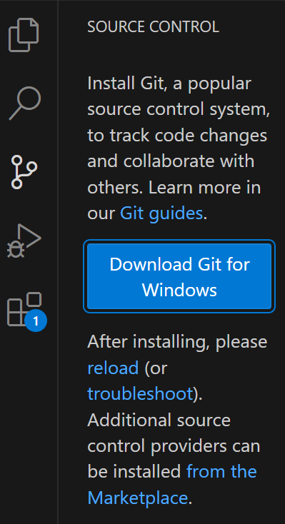
未安装 Git 时的提示
如果安装完毕，请重启 VSCode 或点击 reload
你可能会遇到这个弹窗
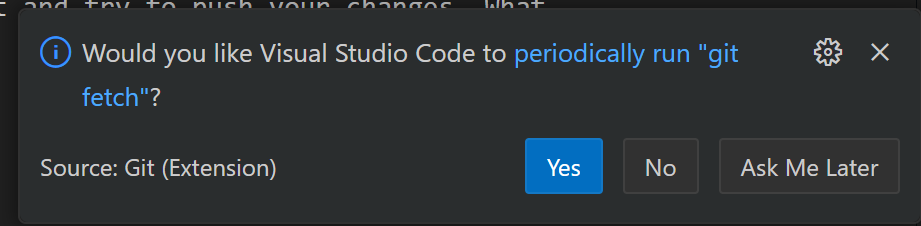
也就是问你是否周期性地获取远程仓库地数据（用来提醒你别人是否做了更改/你当前的版本是否落后于远程仓库）
无所谓，按个人意愿即可
打开文件夹
在 VSCode 中，你需要打开一个文件夹，这个文件夹需要包含一个有效的 Git 本地仓库，这样 VSCode 就能识别到你的仓库并且启用 Source Control 的插件
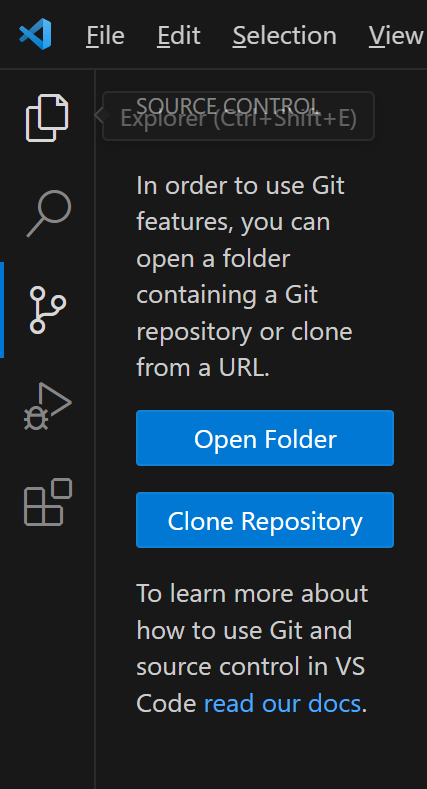
点击 Open Folder 打开一个文件夹作为工作区，或者点击 Clone Repository 直接克隆一个远程仓库
如果出现下图的窗口请点击信任即可
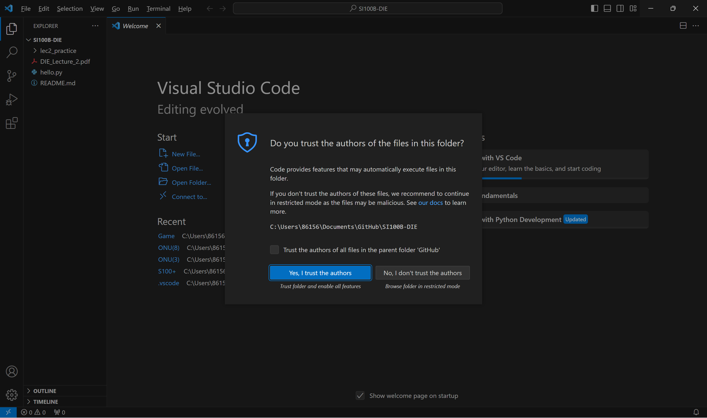
此时打开任意文件，VSCode 就会自动启用 Git 相关的插件，并且能够只能地帮你显示 增、改、删
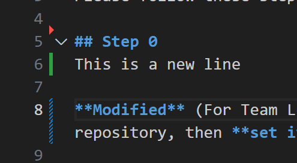
在左侧边栏也会显示每个文件的状态（相当于之前说的git status)，文件的标签页也会显示一个字母或者着色来显示对应的状态
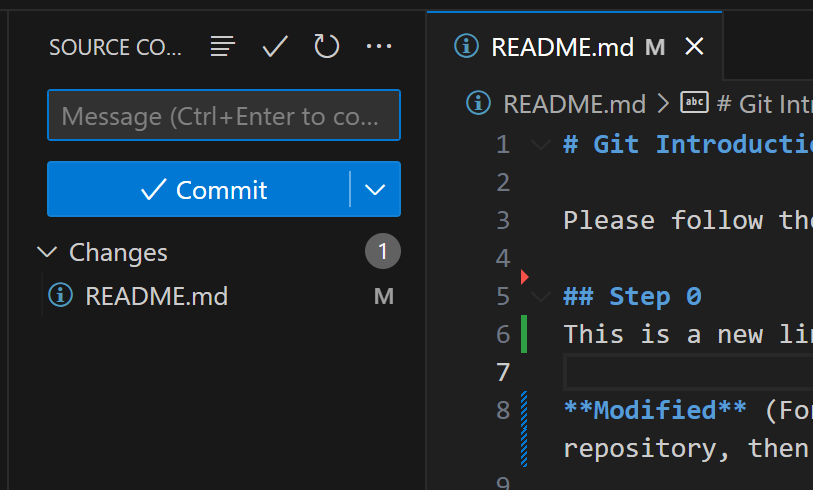
左侧边栏的 Commit 功能
在 Message 区域可以输入你的 Commit Message
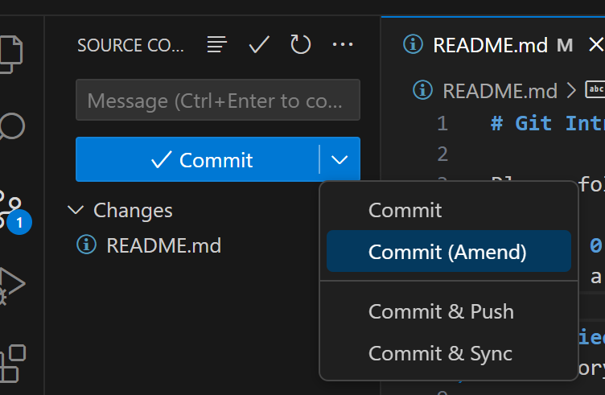
对应的按钮的功能分别为
Commit相当于git commit -m [Message]Commit (Amend)对上次的 Commit 进行修改
此时 VSCode 会打开你上一次 Commit 的内容，假如你上一次出现了少写了一个冒号等等的小错误，而这并不值得新开一个 Commit 时，可以使用 Amend 来追加
Commit & Push字面意思Commit & SyncSync 就是 Push+Pull
当你没有指定 Commit Message 时
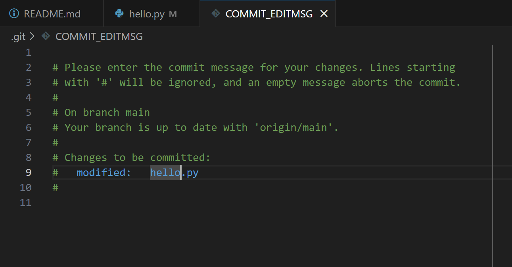
请读注释
解决 Conflict
~~在使用 Git 时候最烦人的事情之一 ~~
关于贮藏(stash)并不打算在此讲解，可以参考一些资料比如：
Step.1 接受一种更改
当你和你的小伙伴在同一处修改，在你提交或者合并的时候就可能弹出来：
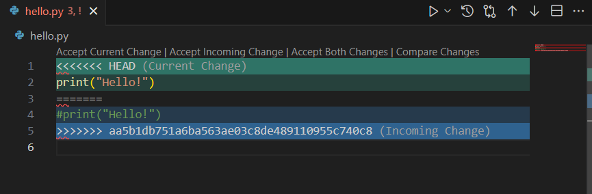
此时 Accept Current Change 和 Accept Incoming Change 就是分别应用不用的更改
上图中的 Current Change 就是绿色的 <<<<<<< 到 =======，Incoming Change 就是图中蓝色的 ======= 到 >>>>>>> 部分
~~非常奇怪，但是醒目，不是吗~~
而 Accept Both Change 则会将不同的代码都保留下来
Compare Changes 就会列出两个文件不同的地方
Step.2 解决冲突
此时你的代码文件会变成接受了 Step.1 的某一种更改的样子
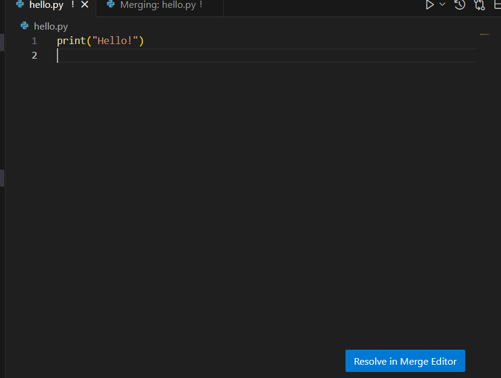
当你修改好了之后，点击 Resolve in Merge Editor
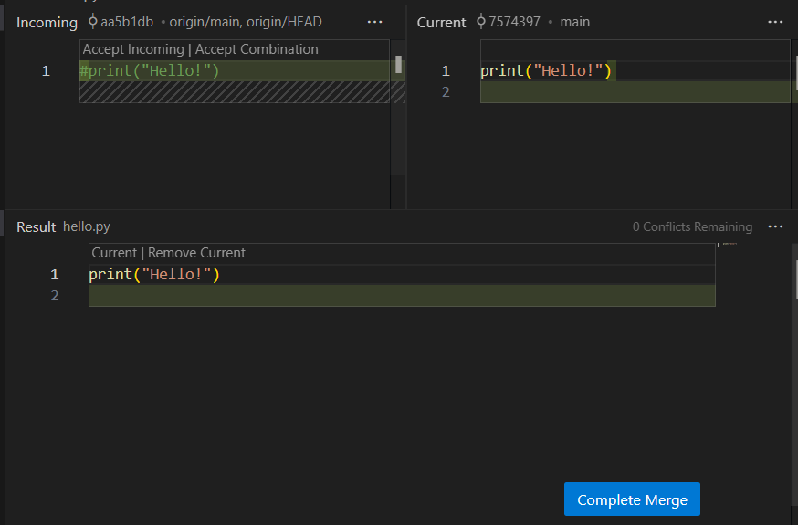
在确认页面点击 Complete Merge 完成合并，或者进行其他操作
Question...?
为什么是 Merge？为什么自动提交的 Commit 信息也是 Merge？我只是 Pull 了？！
Pull = Fetch + Merge
查看历史记录并恢复
VSCode 自带的 Source Control 中并没有提供图形化的历史查看功能，但是我们可以安装额外的扩展
安装 Git History 扩展
Git History 提供了 Git History 功能，可以方便地查看当前仓库或者单个文件的历史
要安装 Git History，请转到 Extension 侧边选项卡，在搜索栏中键入 Git History，并点击 Install

此时等待插件安装完成并启用即可（可能需要 reload VSCode）
File History
想要呼出 File History，请右键文件的标签页或者 Explorer 侧栏中的文件中点击 Git View File History

此时就会显示出单个文件的修改记录

PS. 此处即为笔者和 AstatineAi 一起开发的 ONU 项目中，
server.py的修改记录，欢迎pr~PPS. 绿色和红色的分别是本地分支 (branch) 和线上分支，我们不在这里细说
Git History
与 File History 不同，Git History 会显示整个目录的 History，如果你创建了许多 branch，你还可以看到漂亮的 branch 图（就像前文那样）

不难看出，鄙人的写bug水平有待提高
复活吧！我的爱人！
你会看到每个 Commit 有两个蓝色的 clickable 的 link，分别是 Soft 和 Hard，分别对应了 git reset --soft [hash id] 和 git reset --hard [hash id] 两个命令
暂且不探究这两个命令的含义，我们来讲讲它如何作用的，如果你忘记了暂存区和工作区的含义，请回到Git 是如何工作的？看看
Soft reset
在使用 Soft reset 的时候，你的电脑上：
- 暂存区（
add添加的地方）：保留当前的更改 - 工作区（编辑器当前的文件）：回到历史版本
直白一点
graph LR
subgraph 软回退到更改1
subgraph 工作区'
更改1'
end
subgraph 暂存区'
更改2'
更改3'
end
end
subgraph 原来
subgraph 历史
更改1
更改2
end
subgraph 工作区
更改3
end
end
更改1 --> 更改1'
更改2 --> 更改2'
更改3 --> 更改3'Hard reset（危险）
- 暂存区（
add添加的地方）：回到历史版本 - 工作区（编辑器当前的文件）：回到历史版本
如你所见，Hard reset 会丢弃并回收掉当前的更改，所以如果没有 commit 或者 push，你的更改就全 部 木 大！
graph LR
subgraph 软回退到更改1
subgraph 工作区'
更改1'
end
subgraph "🚮拜拜"
更改2'
更改3'
end
end
subgraph 原来
subgraph 历史
更改1
更改2
end
subgraph 工作区
更改3
end
end
更改1 --> 更改1'
更改2 --> 更改2'
更改3 --> 更改3'PS. 当然一定时间内还是有方法的，请搜索 git reflog / git log